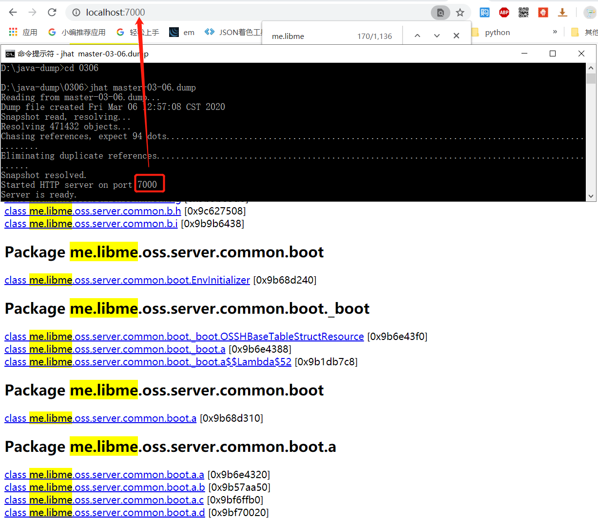
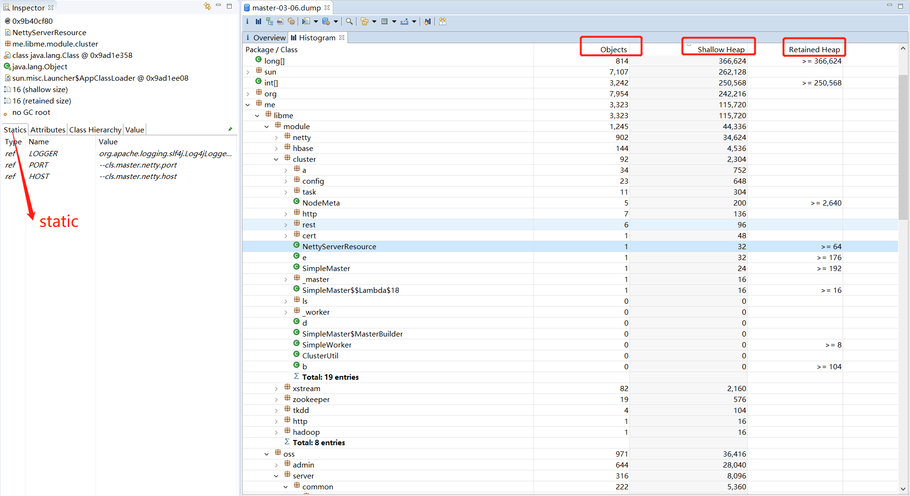

JAVA
JVM
DUMP(堆转储)文件
1.主动生成DUMP文件，运行jmap -dump:live,format=b,file=heap-dump.dump ${pid}
2.启动JVM时添加-XX:+HeapDumpOnOutOfMemoryError -XX:HeapDumpPath=${目录}，在抛出OOM异常时自动生成DUMP文件
可以使用MAT（Memory Analyzer Tool）
或者 jhat 命令 (http://localhost:7000/)
jhat

MAT
HBASE
Script
hbase hbck -fixMeta #修复.META.表
hbase hbck -fixAssignments#重新分配到各分区服务器regionserver
note:/hbase/data/default/ 为默认default schema下所有的表信息存储路径
ZooKeeper
Script
session timeout:
minSessionTimeout=45000
maxSessionTimeout=90000
Hadoop
Script
查看修复HDFS中损坏的块:
./hdfs fsck -list-corruptfileblocks
./hdfs fsck / | egrep -v '^\.+$' | grep -v eplica
Gateway
Script
DispatchServlet -> HandlerExecutionChain(Interceptors around Handler) ->SimpleControllerHandlerAdapter ->ZuulController(包装了ZuulServlet)->ZuulServlet
// Marks this request as having passed through the "Zuul engine", as opposed to servlets
// explicitly bound in web.xml, for which requests will not have the same data attached
RequestContext context = RequestContext.getCurrentContext();
context.setZuulEngineRan();
try {
preRoute();
} catch (ZuulException e) {
error(e);
postRoute();
return;
}
try {
route();
} catch (ZuulException e) {
error(e);
postRoute();
return;
}
try {
postRoute();
} catch (ZuulException e) {
error(e);
return;
}
Zuul 通过ThreadLocal绑定RequestContext RequestContext.getCurrentContext(),
RequestContext里面有请求和响应的包装，
aha，好像后面都是交给这个类来处理请求响应IO的吧？和之前写的Netty相似？FilterLoader 根据filter-type（pre，route，post，error） 获取 ZuulFilter Filter在线程中同步执行，虽然方法名称看起来有点异步的感觉
public Object run() throws ZuulException
- SUCCESS
- SKIPPED
- DISABLED
- FAILED
RibbonCommand(Spring)
public interface RibbonCommandFactory<T extends RibbonCommand> {
T create(RibbonCommandContext context);
}
- OkHttpRibbonCommandFactory(Spring)
- HttpClientRibbonCommandFactory(Spring)
- RestClientRibbonCommandFactory(Spring)
到现在为止，我们的RibbonCommand出来了，顺带Hystrix也进来了，从代码中，我们发现Hystrix是需要ZuulProperties来初始化的。
啦啦啦~~~ 现在我们开始execute-------->
首先Hystrix来了，增加isolate特性